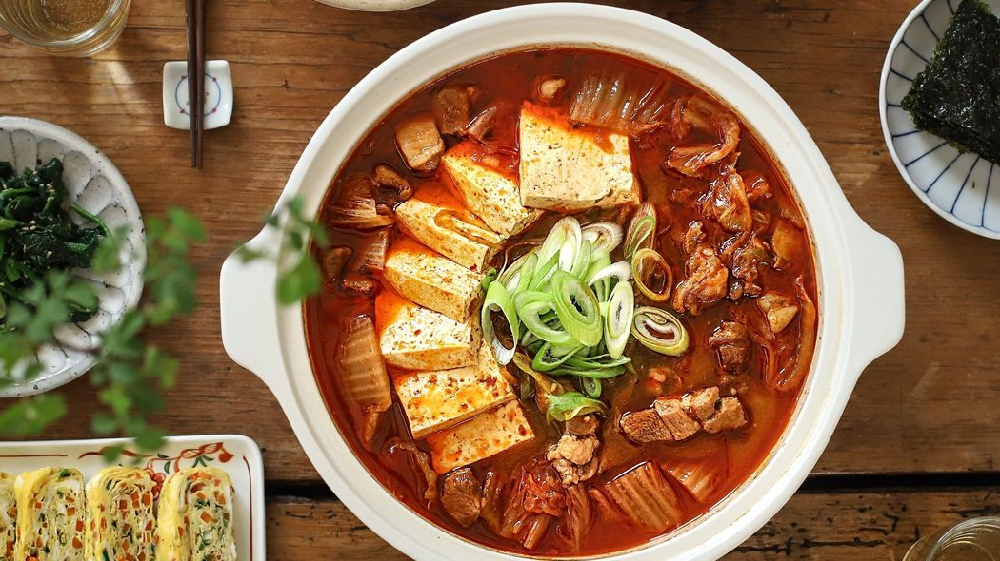
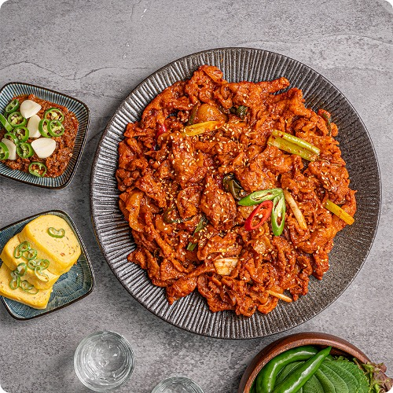
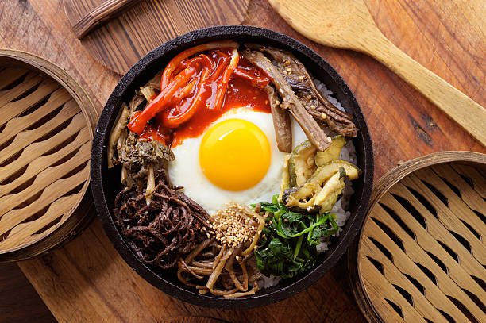

돼지고기와 김치를 기반으로 하는 대표적인 찌개 요리 중 하나이다.

| 1 | 돼지고기는 먹기 좋게 썰어 고기양념에 밑간하여 15분 정도 재워준다. |
| 2 | 배추김치와 두부는 먹기 좋게 썰고, 대파는 어슷하게 썰어 둔다. |
| 3 | 냄비에 약간의 기름을 두르고 돼지고기를 넣어 2분 정도 볶아 표면이 살짝 익으면, 김치를 넣어 3~4분 정도 더 볶아준 후 국물재료 넣어 15분 정도 끓인다. |
| 4 | 두부와 대파를 넣고 2분 정도 더 끓여 돼지고기 김치찌개를 완성한다. |
제육볶음은 돼지고기에 고추장 기반으로 만든 양념장을 넣고 볶아서 만든 음식이다.

| 1 | 돼지고기는 먹기 좋은 크기로 자르고, 양파와 깻잎은 채를 썰어주고, 대파와 청양고추, 홍고추는 어슷하게 썰어준다. |
| 2 | 볼에 양념재료를 넣어 섞은 후, 돼지고기를 넣고 주물러서 먼저 양념하고 양파와 대파를 더해 섞어 20분 정도 양념장에 재워준다. |
| 3 | 팬에 약간의 기름을 두르고 양념한 돼지고기와 야채를 넣고 볶아주고, 돼지고기가 익으면 청양고추, 홍고추, 참기름을 넣어 살짝 볶고 불을 끈다. |
| 4 | 채썬 깻잎과 깨를 뿌려 제육볶음을 완성한다. |
비빔밥은 밥에 각종 나물을 넣고, 장을 넣어서 비벼 먹는 전통 한국 요리이다.

| 1 | 쇠고기는 먹기 좋게 썬 후 키친타월에 올려 핏물을 빼고, 고기양념 재료에 10분정도 재운다. |
| 2 | 당근, 애호박, 양파, 표고버섯은 채를 썰고 어린잎 채소는 물에 담가 씻은 후 물기를 제거한다. |
| 3 | 달군 팬에 기름을 두르고 양파-애호박-당근-표고버섯 순으로 약간의 소금으로 밑간해서 각각 볶고 양념한 쇠고기를 볶는다. |
| 4 | 팬에 기름을 두르고 달걀을 넣어 한쪽면만 반숙으로 익힌다. |
| 5 | 볼에 밥과 볶은야채를 돌려 담고, 가운데 불고기와 새싹을 담은 후 달걀프라이를 올린다. |
| 6 | 마지막에 약간의 참기름과 통깨를 뿌리고, 비빔고추장 또는 비빔간장을 곁들인다. |